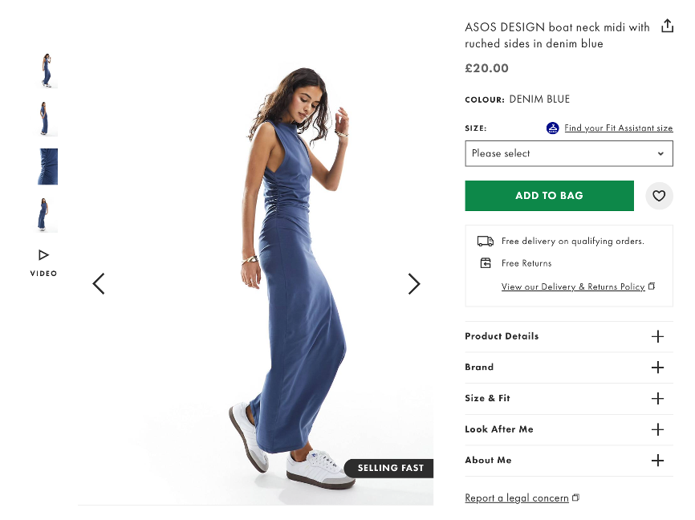

Why are good clothing product descriptions important in the fashion industry?
Product pages and their descriptions are the cornerstone of any good eCommerce store.
The main reason why is pretty self-explanatory – it’s how potential customers learn about your products.
But, while some brands think they can get away with a few
stock images and copy lifted straight from the manufacturer’s website,
your eCommerce content needs to be more than an afterthought. Here’s why:
85% customers feel product content is the most important factor when deciding to purchase an item online, as they cannot physically see, feel, or smell the item.
53% of online customers will abandon their online purchase if they can’t find an answer to a quick question.
85% of shoppers surveyed say product information and pictures are important to them when deciding which brand or retailer to buy from.
Your fashion site’s product descriptions play a crucial role in attracting and engaging customers – new
and old. Your customers want a positive shopping experience, they want to find trust in your brand, and they
want to be confident that they’re giving you their money for a good product. Your product page copy can
ensure all of that happens. Here’s how to do it.
What makes a good clothing brand product description?
A good clothing store description will:
Use clear and concise language to convey information.
Avoid jargon and technical terms that might confuse the reader.
Choose words and descriptive adjectives that highlight the unique features of the clothing item.
Speak directly to the customer’s needs and aspirations, tailoring the description to the audience’s preferences.
Tell the product story so the customer can visualise the product in their life.
Include accurate sizing information while also providing details about the fit.
Specify the materials used in the clothing item.
Suggest different ways the clothing item can be styled or paired with other pieces in your store.
Refer to your brand story and values.
Be inclusive.
Provide care instructions to help customers maintain the longevity of your product.
Include a clear and compelling call to action.
Customers don’t want to buy unremarkable things. Your product copy needs to pack a punch. Here are ten clothing brand description examples from fashion labels at the top of their game.

Sales are activities related to selling or the number of goods
sold in a given targeted time period. The delivery of a service for a cost is
also considered a sale. A period during which goods are sold for a reduced price
may also be referred to as a "sale".
Sales You need to focus on brand values: The product description highlights the use of recycled materials. It provides a meaningful and eco-conscious selling point, aligning with the growing trend of environmentally conscious consumers.
It reminds consumers that Superdry is an iconic brand: It uses phrases such as “iconic silhouette” and “embroidered branding” to remind customers that this is a brand you want to be seen wearing.
You need to be transparent about fit and sizing: The indication of a “Slim fit – designed to fit closer to the body for a more tailored look” provides clear information about the jacket’s fit. This transparency helps customers make informed decisions based on their style preferences:
You need to consider emotions: The product description establishes an emotional connection by describing the shoe as a “timeless romantic” and a “love letter from us to you.” This content marketing tactic creates a narrative around the product, making it more than just a shoe and evoking a sense of sentimentality.
You should appeal to the senses: The discussion of the scent of Cherry Blossom adds a sensory element to the description. It engages the reader’s senses, providing a unique and immersive experience – and one you don’t expect when buying shoes.
You need to develop a unique tone of voice: quirky, unique and playful. NTW are consistent across its site in how it shapes its copy, helping to build a recognisable brand personality.
STATISTICS:
All statistics of these clothing store description examples have lots in common.
They write with both the user and search engine in mind. While they help customers visualise their products
IRL, they also provide details of colourways and materials used to help create a path between their site
and potential customers searching for specific items. Product description writing is an art,
and here are our top tips for writing high-quality content deserving of that masterpiece status.